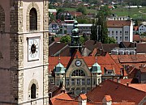
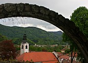

Disclaimer: These pages are not actively maintained, and some of the practical information on the site is out of date. I am working on a new version of the site that will focus more on my photos and memories of travel in Southeast Europe, and less on practical details that too easily become obsolete. In the meantime, please treat the information here with caution.
Smalltown Slovenia
Many visitors to Slovenia concentrate on Ljubljana, mountain resorts such as Bled, and major tourist attractions like Postojna Cave. All these are worthy destinations, but you'll get a more complete picture of the country if you make time to visit a few of its small towns, many of which consist of mediaeval houses clustered around a hilltop castle or church. Three of the best are Skofja Loka, Ptuj, and Kamnik,.
Loka Castle

Capuchin Bridge, Škofja Loka
Škofja Loka
Škofja Loka, located north-west of Ljubljana where the plain gives way to mountains, is Slovenia's best preserved mediaeval town. Most sights of interest are on the south side of the Selščica River, which is crossed by the arched Capuchin (Kapucinski) Bridge. The highlight of the old town is Mestni Trg - like many Slovenian town squares it is more like a wide street than a square and has a Plague Pillar in the middle. Around it are colourful burghers' houses with frescos on the outer walls. Just above Mestni Trg, Loka castle watches over the town - it now houses a museum. To the south of town the more rural Puštal district is a nice place for a stroll - the flowers cultivated by the locals are lovely even by the high standards of Slovenian towns. The Nacetova House, an example of traditional wooden architecture, is in this area. Cross the river and walk uphill to the prominent Sv Križ church for excellent views of Puštal and Škofja Loka.
View from Lubnik
There is some very enjoyable hiking around Škofja Loka. The mountains are not as high as the Julian Alps, which means that even casual walkers can have the satisfaction of reaching a summit. On the way there are plenty of views of forests and meadows, with the snowcapped Alpine peaks to the north, and there always seems to be a little Baroque chapel improbably perched on a nearby hilltop. The summit of Lubnik (1025m), immediately to the west of Škofja Loka, is a good place to aim for. It took me two hours to walk from the village to the mountain hut at the top. There are also marked bicycle trails in the area.
River Drava

View of Ptuj from the Castle
Ptuj
Ptuj is one of the main attractions in the less visited eastern half of Slovenia. The town is especially impressive seen from the other side of the wide Drava River. Like so many Slovenian towns it consists of a cluster of red-roofed houses overlooked by a castle on a hill. Ptuj's castle is larger than most - you can see it from miles away across the plain. As well as being the place to go for views of the town, the castle contains a museum; a little shop serves drinks in the triple-arcaded courtyard.
Some of Ptuj's most impressive buildings can be found around Slovenski Trg. In front of the free-standing belfry is a Roman monolith showing Orpheus charming the beasts with his lute. Almost every street in the town centre has something of interest. No two buildings are alike, and there are many idiosyncratic details to look out for in the facades - a carved elephant, a bunch of grapes, a (real) pigeon nesting between the paws of a gryphon. Look out for the monument to St Florian, the patron saint of firemen, erected after a series of disastrous fires. It shows a bunch of cherubs trying to save a burning castle while Florian himself strikes a heroic but hardly helpful pose.
The yellow and white facade of the Dominican Monastery church was described by one writer as "an example of hideous Baroque that wouldn't even qualify for the museum of bad art". I don't think it's that bad myself, although it's certainly not the town's greatest piece of architecture. The monastery now houses an archaeological museum.
And in case you were wondering - yes, you do have to pronounce the P and the T.

Kamnik
Kamnik
Kamnik is located in wooded countryside to the north of Ljubljana. It has a few museums and galleries, but the main attraction is simply wandering around its central streets enjoying the mainly mediaeval architecture. A walk along the main street (Šutna, which becomes the main square Glavni Trg) will take you past most of the interesting buildings. As usual there is a castle (Mali Grad) on a hill - this one is accompanied by a two-storey Romanesque chapel. To the north is a Franciscan Monastery; if you keep walking north you will soon see the Kamnik Alps looming in front of you.
Practicalities
Škofja Loka and Kamnik both make good half-day trips from Ljubljana (or full day trips if you want to do some walking). Buses run roughly half-hourly to the centre of Škofja Loka (40 minutes). There are also some trains but the station is 3km from the town. Kamnik is served by hourly trains (1 hour) as well as buses (fewer at weekends). Of Kamnik's three train stations, the middle one (Kamnik-Mesto) is closest to the centre.
Ptuj could be visited as a long day day trip from Ljubljana but it's probably better to stay overnight either in Ptuj or in Maribor, Slovenia's second largest city. Maribor is well worth a visit in its own right, and has excellent bus and train connections within Slovenia and to Austria. Indeed Maribor's vast modern bus station is far more impressive than Ljubljana's shed-like equivalent. Frequent buses link Ptuj and Maribor (45 minutes). There are one or two direct trains daily from Ljubljana to Ptuj (2.5 hours), one of which continues to Budapest.
More photos in my Slovenia Galleries